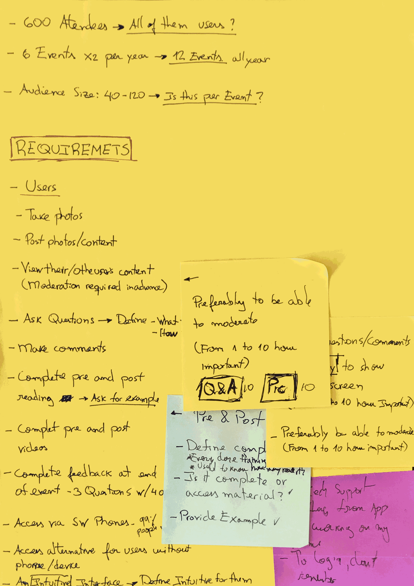
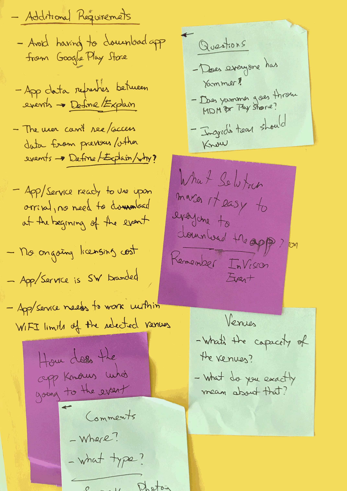
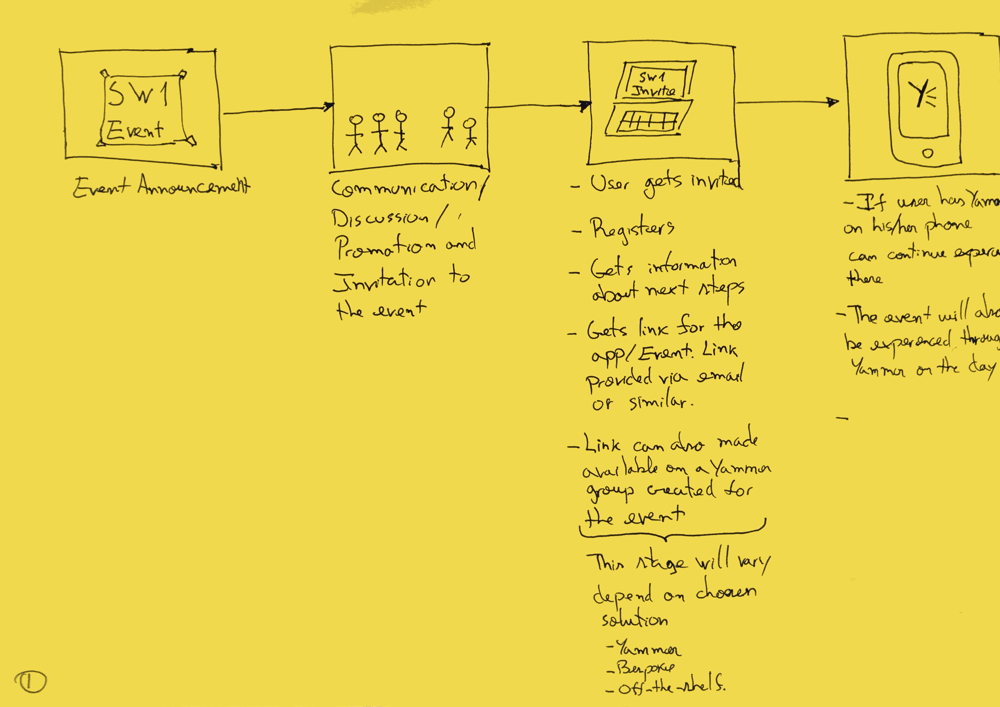
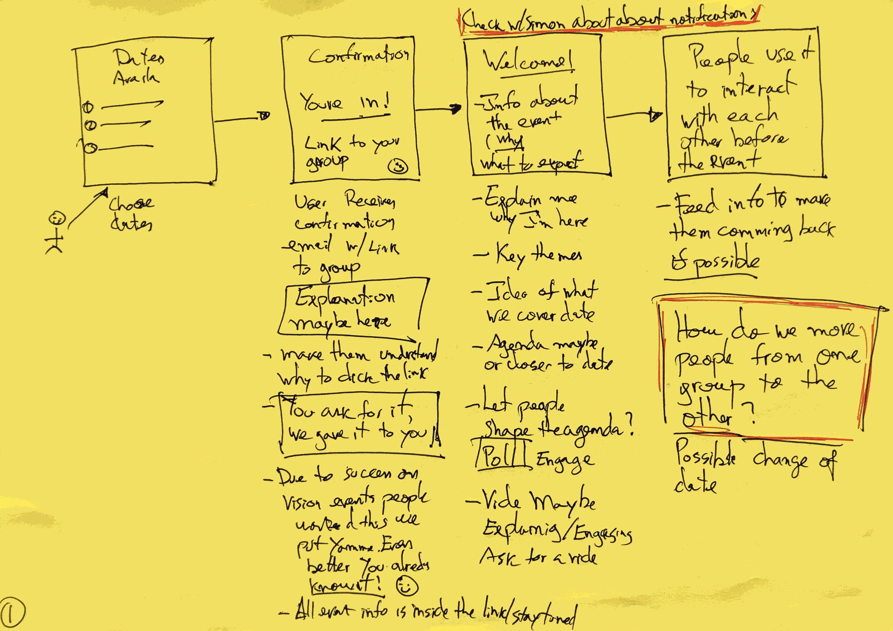
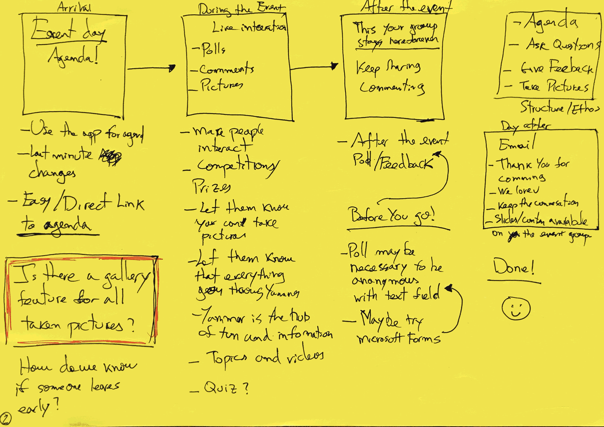
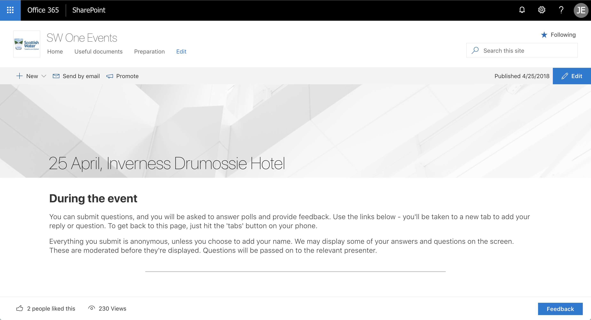
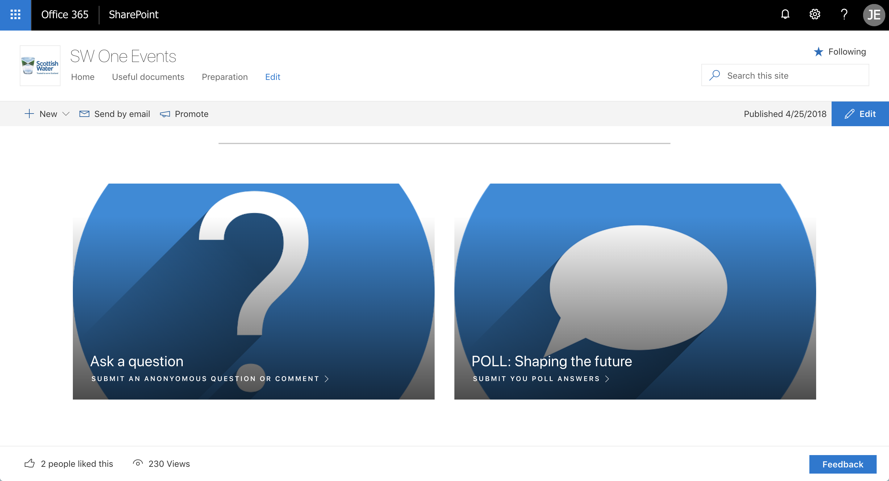
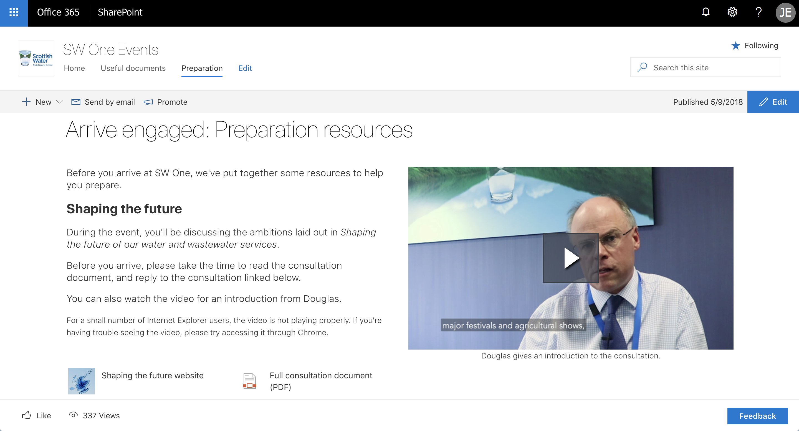

Case study
SW One
A mobile and web solution for creating and managing events for Scottish Water's Executive and Senior Leaders — built on existing platforms rather than a new app, saving the business over £50K a year.

The problem
A series of events the year before, in 2017, had given attendees a mobile app for easy access to information and real-time interaction. It worked well. The business wanted to repeat it.
The original app was leased from a third party at a high annual cost, and the business wanted to reduce or remove that cost entirely.
The initial ask was for an in-house build to replace the leased app. I was responsible for the first assessment.
My role
I assessed, designed and developed a new solution for SW One and Senior Leader events that saved the company more than £50K a year in leasing fees.
The new solution prioritised existing platforms, removing the need for a bespoke coded app — the original ask from the stakeholder and sponsor.
I led engagement with users and stakeholders, user journey mapping, fast prototypes, focus groups and usability testing — the latter a first for the organisation.
The solution was used across more than ten events over two months, won a performance award from the CEO, and has since been fully adopted by the organisation.
Requirements
The original requirements document, gathered from the senior stakeholder before any solution work began.


User journey



Breaking down the process
After evaluating the initial requirements from the senior stakeholder, I organised what I'd gathered, clarified the gaps, and validated the assumptions underneath the original ask.
I presented three alternatives — each with its pros, cons and trade-offs — along with a recommendation and a contingency plan.
1. Bespoke application Original requirement
- Possible, but not feasible inside the timeline. Delivering the first series of events in under three months would have needed investment the budget didn't have.
- The original brief never accounted for an admin area — needed because every event has different content and agenda for its attendees. Building one would have added further cost.
- It would have needed ongoing maintenance: bugs, fixes and updates, for both the app and the admin area, indefinitely.
- Once this was laid out clearly, the stakeholder and sponsor were confident in ruling out a bespoke build.
2. Off-the-shelf Contingency plan
- A leased, off-the-shelf alternative — more flexible than the original app, and at a fraction of the cost.
- Five options were shortlisted to show the range on the market and the value of properly defining requirements before choosing.
- The downside: users would need to download the app themselves. Simple on a personal phone, but a real barrier on a work phone, given permission restrictions and internal security protocol — a friction point the stakeholder wanted to avoid.
- Kept as a contingency plan, in case nothing else was suitable.
3. Internal platforms Recommendation
- The company had recently adopted a set of modern, cloud-based platforms. Meeting the requirements through these represented close to zero additional cost, and made full use of tools already in place.
- The first prototype used Yammer. It wasn't the right fit, so I moved to SharePoint and built a series of event sites there instead.
- This removed the deployment barrier the off-the-shelf option ran into — no download required, and everyone already had SharePoint access. It's also fully mobile responsive, with no loss of feature or experience across screen sizes.
- Zero training needed. SharePoint was already widely adopted internally, so there was no manual or guide to write.
- One gap remained: live Q&A. After testing several third-party tools, I integrated Slido, which closed it.
In detail



Lessons learned
The real problem was information distribution and access, not an app.
Want to learn more?
Let's chat.
Contact →